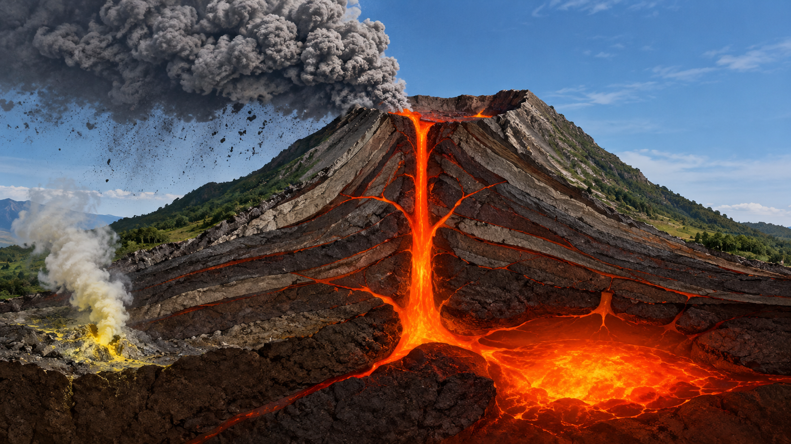

1.Nuvem de Cinzas Piroclásticas
Mistura de gases quentes, cinzas e fragmentos de rocha lançados à atmosfera durante uma erupção vulcânica, podendo se espalhar por grandes distâncias.
2.Cratera Superior
Abertura localizada no topo do vulcão, formada pela atividade vulcânica, por onde podem ser expelidos lava, gases, cinzas e outros materiais.
3.Chaminé de Lava
Canal interno que permite a subida do magma das regiões profundas do vulcão até a cratera ou outras aberturas na superfície. Quando chega à superfície, o magma passa a ser chamado de lava.
4.Fumarola de Enxofre
Abertura na superfície do vulcão por onde escapam gases vulcânicos, incluindo compostos de enxofre, como o dióxido de enxofre e o sulfeto de hidrogênio.
5.Câmara Magmática
Região subterrânea onde o magma pode se acumular antes de subir em direção à superfície. Sua pressão e suas condições internas podem influenciar a atividade e as erupções do vulcão.